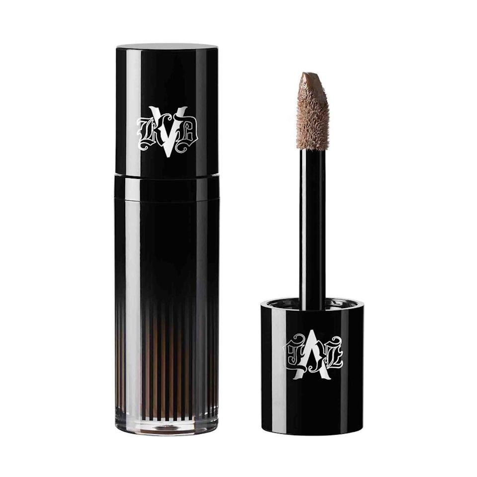
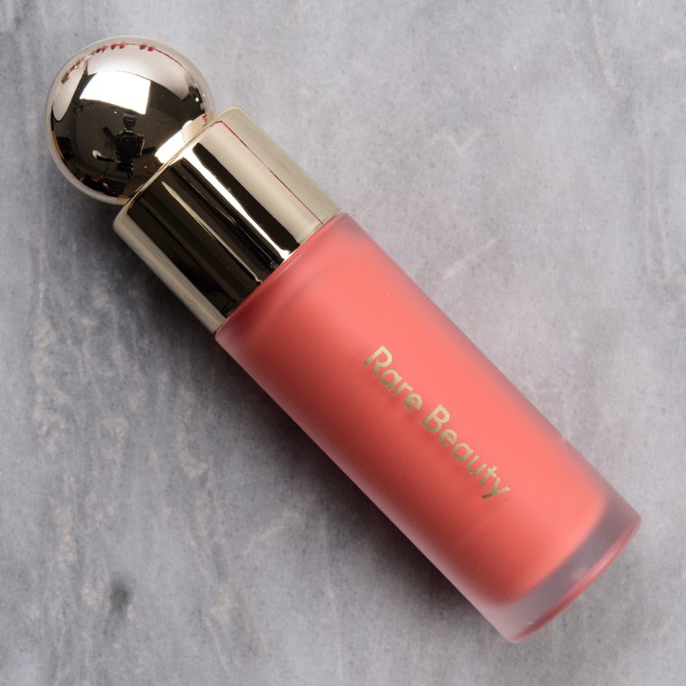
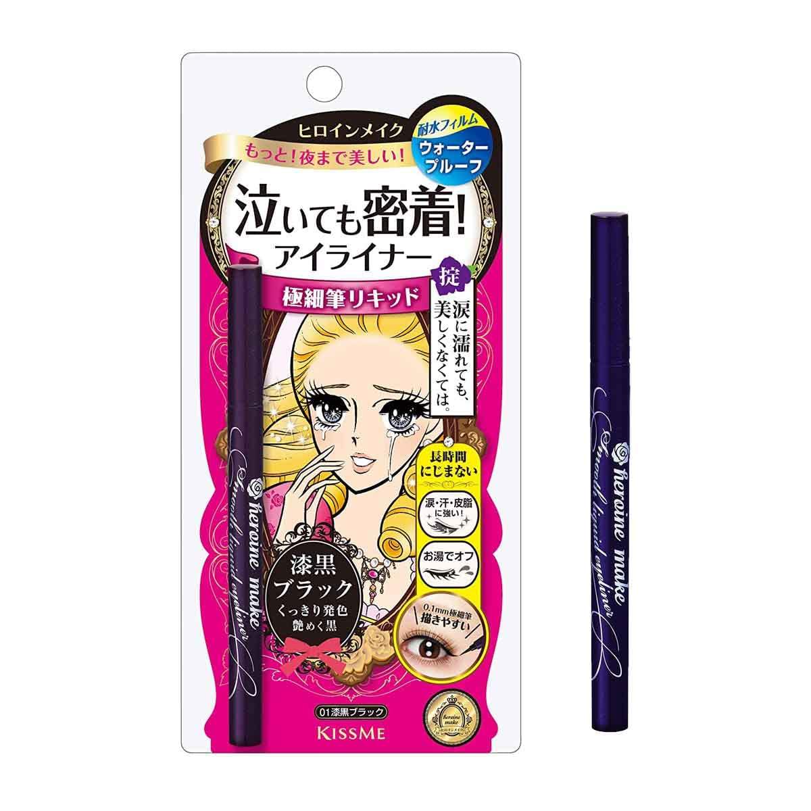
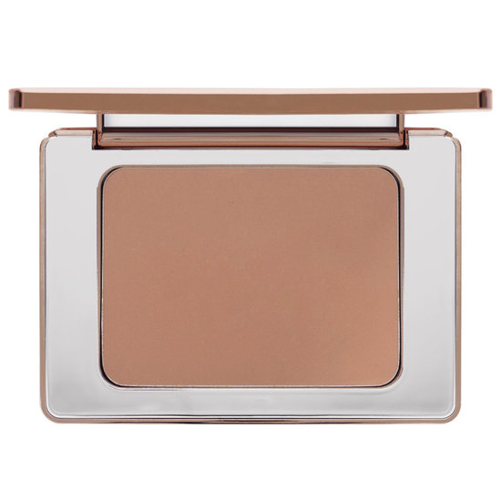
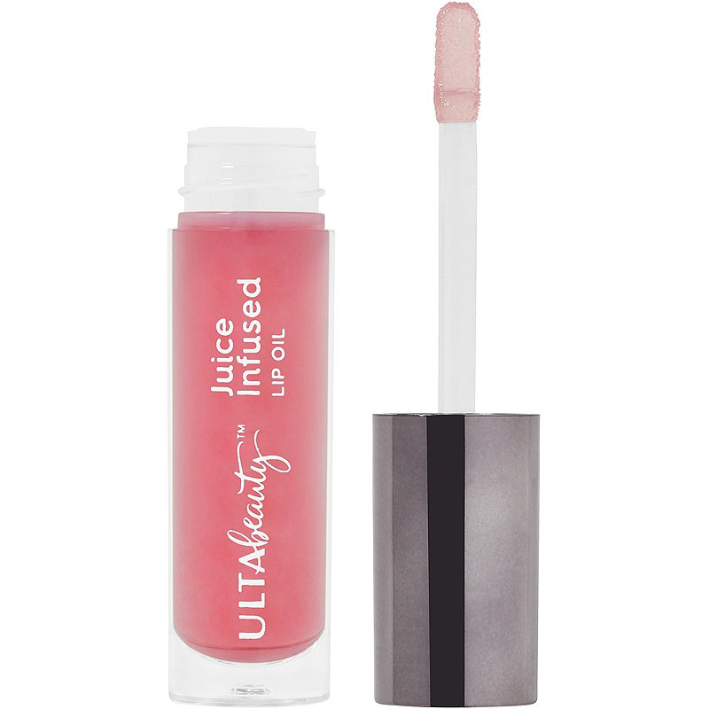

|  | Kat Von D Liquid ContourI bought this product a few days ago because of the hype on TikTok and how people have been saying this is a dupe for the Charlotte Tilbury Contour Wand. I decided to try it out and I so far quite like it. It has a nice applicator which I actually prefer over the Charlotte Tilbury one, but it is a bit harder to blend out seamlessly into your skin. I will still keep using this product to see how it performs throughout the upcoming weeks. |
|  | Rare Beauty Liquid Blush in Shade JoyI have been using this product for around 2 weeks now and I can say I am OBSESSED with this product. Blush usually is the first thing to disappear throughout the day for me and this stayed put ALL DAY! I love this shade joy because it livens up your face. You have to however be very careful with this product because a little does go a very long way. |
|  | KissMe Heroine Makeup Liquid Eyeliner in BrownI have been testing out this eyeliner for around 1 week and I can say I am extremely impressed by this product! It stays on all day without smudging whatsoever. I used this when I was in the water all day and it did not move at all. The brush tip of this eyeliner also allows you to create the thinnest wings ever. |
|  | Natasha Denona Contour Sculpting PowderI love contour powders and I decided to try this one out. I love the shade of this contour powder because it is perfectly grey toned which makes it look like a very realistic shadow. It can however, be a little bit hard to blend out so you have to make sure to powder the skin beforehand to ensure a seamless blend. |
|  |
Ulta Beauty Collection Juice Infused Lip OilI picked up this lip oil because of the hype I see on TikTok. I tried it a few times and it really gives you that glossy, juicy, plump lip look. It does not last very long however, and my hair gets stuck on my lips quite often if I use this. It does not necessarily make my lips a lot more hydrated, so I would give this a 6/10. |